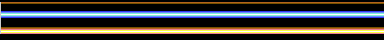
D01 Stable raster copper bars in the demo
Colour gradients roll through the top border, one colour per raster line.
72 demo references, examples, and recipes for Codeurs en Seine 2026. Green cards show what runs in the demo today.
Use these reference IDs in prompts and issue reports. Captures show the real program running in PAL VICE.

Colour gradients roll through the top border, one colour per raster line.
The bottom text row scrolls left while the rest of the screen stays still.
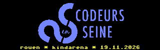
A white glint crosses the Codeurs en Seine logo.
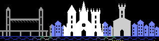
A second charset shows the Rouen skyline while blue tones cycle across the Seine.
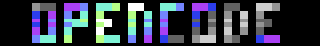
A diagonal rainbow sweeps across the opencode logo.
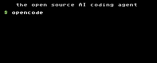
A simulated terminal session prints character by character with a blinking cursor.
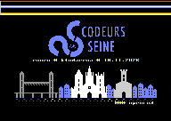
Codeurs en Seine logo and date above the Rouen skyline, with copper bars and scroller.
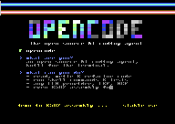
Block logo, subtitle and simulated terminal session, with copper bars and scroller.
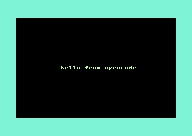
BASIC upstart, machine takeover, frame sync by polling $d012, border colour cycle.
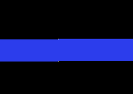
Two chained raster interrupts split the screen into colour zones.
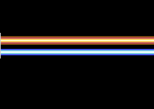
Full-height cycle-exact bars with the screen blanked (no badlines).
The scroller technique on its own.
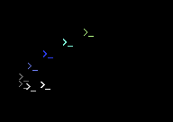
8 hardware sprites following sine tables generated at assemble time, X MSB handling.
Data or colour-RAM change only; safe to do live on stage. Each preview is labelled as a PAL VICE capture or a browser simulation.
Bars change palette (fire, ice, rainbow, Rouen red & gold)
Edit the bars table. Brightness order: 0,6,9,11,2,4,8,12,14,10,5,15,3,7,13,1
Bars scroll up, down, or faster
Rotate the table the other way, or call rotate_bars twice per frame
Several bars bounce on sine curves
Clear a 32-byte table, then plot 2-3 small gradients at sine[t+i*40]. Table built with !for + sin()
Any text row cycles a gradient
Write gradient[(x+phase)&15] to $d800+row*40+x
A white band crosses a logo
Same as A4, with a gradient that is mostly one colour (see ces_shine)
Scroller letters cycle colours
A4 applied to row 24
Faster, reverse, or speed follows a sine
sbc #speed, or speed = sine[t]>>5. Reverse = shift right and feed at column 0
Screen flashes on a beat
Set $d020/$d021 to white, decay through a fade table over 6-8 frames. Trigger from a frame counter (beat table)
Smooth transitions between parts
Fade tables fade[c] → darker colour, applied to colour RAM over 8-16 frames (Veto's colour ramps: vic)
Text appears column by column, or randomly
Colour RAM starts black; per frame, set N cells to their real colour (column order or a random-permutation table)
Different speed, colours, extra lines
TYPE_SPEED, typer_text control bytes
Waves, blinking windows, a waving flag
Rewrite 8 bytes of one charset char per frame (e.g. ROL the water char bytes)
Skyline windows and stars flicker
Random colour-RAM cell from a table set to yellow, another to dark, each frame
Short "signal lost" moment
For 5-10 frames: random $d016 xscroll and $d020 per frame, garbage colours on a few rows
Whole screen jolts on a beat
Change $d011 YSCROLL bits (keep bit 4 and bit 3) for a few frames; clamp to 0-7
Opencode logo in brand colours
Edit logo_gradient / shine_gradient
Rotating group/sponsor names
Text table + A10 wipe every N seconds
New routine or jitter-tolerant raster IRQ; prepare beforehand. Each preview is labelled as a PAL VICE capture or a browser simulation.
Big scroller, letters 2 chars wide/high
Each letter = 4 chars from a 2x2 charset. Shift every 2 steps of the fine scroll
Text scrolls upwards
$d011 YSCROLL 7→0, then move rows up one char line (double buffer to avoid tearing)
Huge letters made of chars
Read ROM font bits, plot $a0/$20 per bit into a 8-row band
Scroller in sprites, can go in the border
ROL a sprite strip, one bit per frame per row
One letter per sprite on a sine
Sprite pointers = letter shapes; Y from sine table
8 sprites chase each other
Two sine tables with different speeds (our examples/04)
Sprites grow taller line by line
Toggle $d017 per raster line while the sprite is shown (needs per-line IRQ or a loop in the border)
Stars moving sideways
8 one-pixel sprites, multiplexed down the screen at different speeds
Parallax stars behind text
Stars = pixels in a few chars, ROL the char bytes; or switch $d018 between 8 pre-shifted charsets
Scroller letters each bounce on their own sine
Plot each letter's 8 bytes into a 2-char-high column charset at Y = sine[x+t]
Smooth flowing colours
Colour RAM = pal[sin1[x+a]+sin2[y+b]+sin3[x+y+c]], half the screen per frame or a 20x12 window
Finer plasma with shading
Screen = plasma index, charset of 8-16 dither shades
Burning flames rising
4x4 chunky pixels in chars, average 3 neighbours + decay, random bottom row
Falling green glyphs
Per-column drop position; head white, tail fades through 13,5,11
Logo sways left/right
Per char-row $d016 change in a raster IRQ (char rows only, so jitter is harmless if done in the row's last line)
Logo/screen drops and bounces
Delay the badline by rewriting $d011 each line for N lines; N follows a bounce table
Sprites in the top and bottom borders
At line $f9 set 24 rows ($d011 bit 3 = 0), back to 25 before line $fc
Coloured background bands behind text
$d021 changes at a few lines via raster IRQs (between text rows)
Bars visible through text background
$d021 per line with a stable loop, but only on non-badlines; simplest with bars in the border or with DEN=0 areas
Bars passing in front/behind each other
Draw bars into the table back to front, sorted by a depth sine
Logo/picture dissolves in pixel by pixel
AND/OR random masks onto the charset bytes over frames
Text with 4 background colours, flashing
Extended Colour Mode ($d011 bit 6), cycle $d021-$d024
Rotating sphere or text made of dots
Precalculate rotated points (no multiply at run time), plot into a charset canvas, double buffer
3D object made of sprites
8 sprites (or multiplexed) at precalculated 3D projected positions
Rotating, zooming texture or tunnel
Precalculated u/v lookup tables in a 40x25 or 20x12 char window, colour RAM output
16-24 sprites on screen
Re-use sprites lower down in raster IRQs, fixed Y bands (no sorting)
Big multicolour logo built from sprites
8 sprites expanded side by side, colours cycled
Many parts with timed transitions
Table (frames, init, frame) (see 04, "Parts")
Flashes and bounces hit the beat
Beat table of frame numbers, or read voice 3 envelope $d41c if the tune uses voice 3 for drums
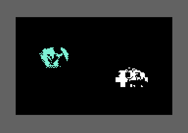
PAL VICE captureTwo cut-out portraits spin like wheels and bounce off the screen edges
Swap sprite pointers through 16 precalculated poses and reverse velocity at the edges
Stable raster on every line, big tables; prepare off-stage, test on hardware. Each preview is labelled as a PAL VICE capture or a browser simulation.
Graphics/sprites across the full width
$d016 toggle on an exact cycle on every line, sprite and badline aware
Logo waves pixel by pixel per raster line
Per-line $d016 + charset/screen switch, stable raster
Sprite letters moving on independent X/Y sines across the border
Per-line sprite register writes with a cycle table
Picture stretched and bent vertically
Repeat or pick any graphics line per raster line
Hardware scroll of the whole screen with no copying
VIC timing quirks; VSP crashes some real machines
Pictures with far more colours
$d018/$d011 every line, 16 KB data, own VIC bank
Rotating bar of graphics
2nd-line FLI tricks
Solid rotating objects
Fast line + fill routines, double-buffered charset or bitmap
Scroller on a 3D floor
Per-line tables
Bigger or distorted sprites
Exact $d017 writes inside the sprite DMA
Speech/drum samples ("hello codeurs en seine!")
4-bit writes to $d418 at 4-8 kHz via NMI; sounds different on 6581/8580
Effects running over the whole bitmap
Combination of C1 + bitmap speedcode